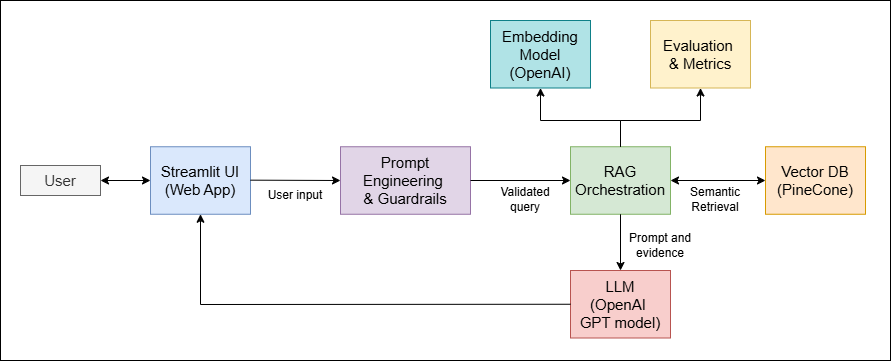

Confused by radiology jargon? HeyDocAI explains it using evidence-backed AI.
HeyDocAI is a Generative AI application that helps users understand complex radiology reports through plain-English explanations, structured extraction, and evidence-based question answering.
The system uses Prompt Engineering and Retrieval-Augmented Generation (RAG) with a Pinecone vector database and OpenAI language models.
The system retrieves relevant medical knowledge from a curated radiology knowledge base stored in Pinecone, injects it into prompts, and generates grounded responses using an LLM.
Screenshots demonstrating the Explain, Extract, and Evidence Q&A features are available in the repository.
docs/screens/
The system was evaluated using a standardized query set to measure performance and reliability.
HeyDocAI does not provide medical diagnosis or treatment advice. All responses are grounded in cited sources, and users are advised to consult healthcare professionals.